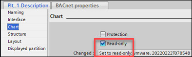
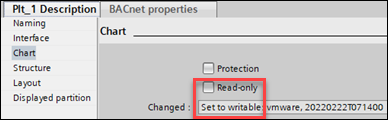
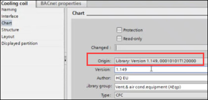
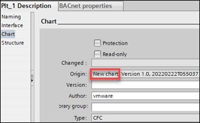
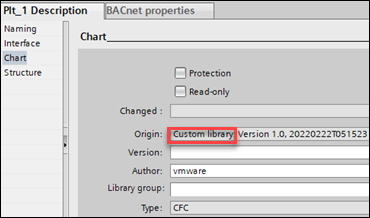

控制程序只读
在Changed字段中，您可以看到有关从库创建控制程序或作为新控制程序创建的空信息。
这Changed 现场显示Set to read-only如果Read-only 复选框已勾选。

这Changed 现场显示Set to writable如果Read-only 复选框被清除。

在Origin字段中，有以下三种情况：
1. 第一个实例显示原始位置，例如，Library.

2、如果新建一个控制程序，信息显示为New chart并且版本更改为Version 1.0。如果需要，可以更改版本号Advanced选项卡，位于Library选项卡。

3. 如果将控制程序保存到库中并从库中取回，则文本将更改为Custom library.
